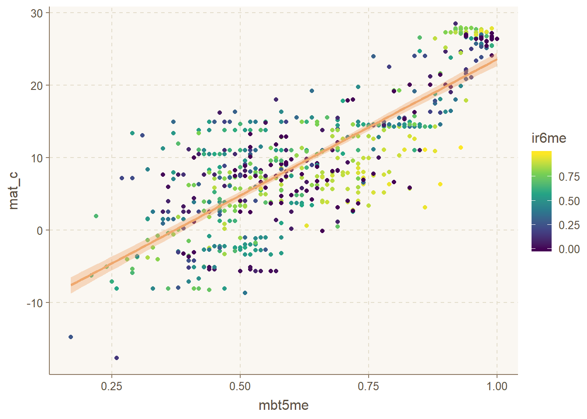
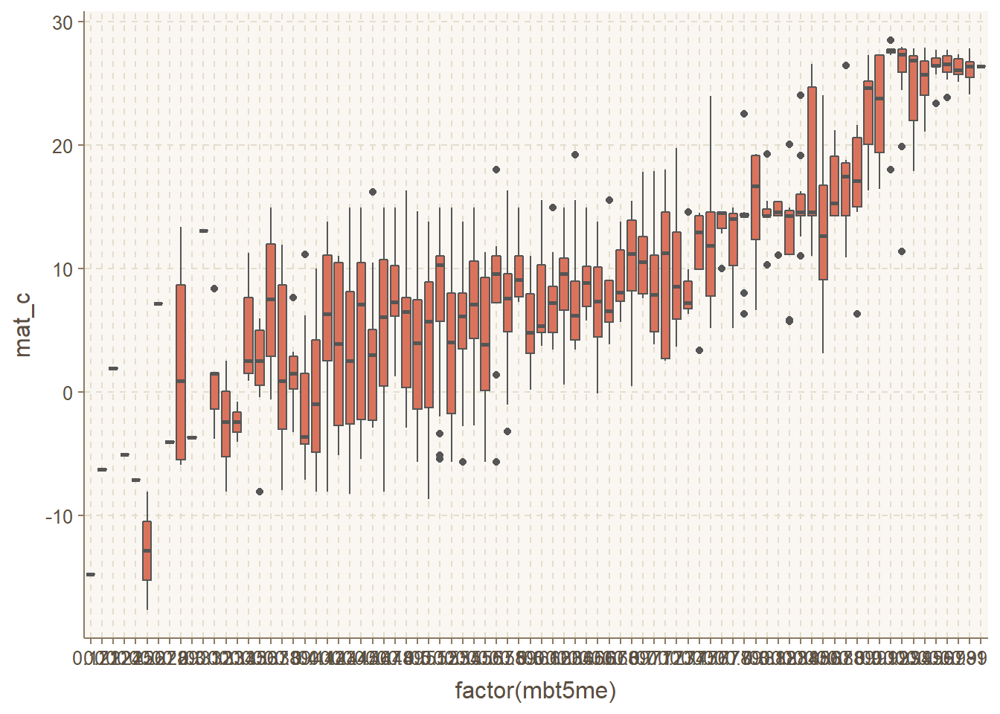
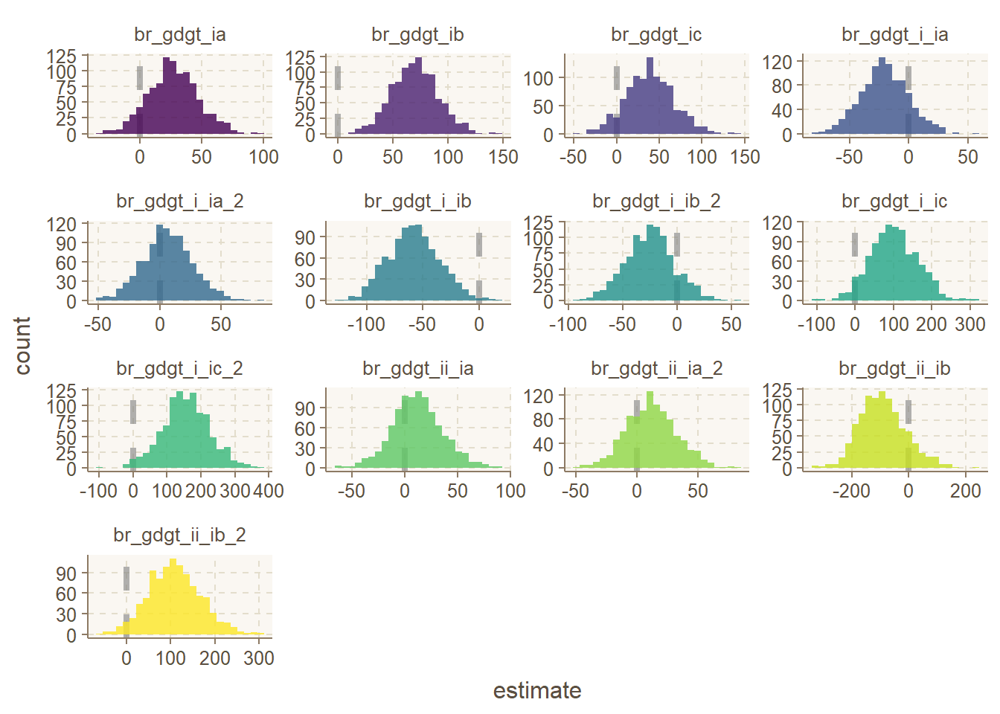

Last updated: 2020-07-02
Checks: 6 1
Knit directory: calibration_globale_gdgt/
This reproducible R Markdown analysis was created with workflowr (version 1.6.2). The Checks tab describes the reproducibility checks that were applied when the results were created. The Past versions tab lists the development history.
The R Markdown is untracked by Git. To know which version of the R Markdown file created these results, you’ll want to first commit it to the Git repo. If you’re still working on the analysis, you can ignore this warning. When you’re finished, you can run wflow_publish to commit the R Markdown file and build the HTML.
Great job! The global environment was empty. Objects defined in the global environment can affect the analysis in your R Markdown file in unknown ways. For reproduciblity it’s best to always run the code in an empty environment.
The command set.seed(20200702) was run prior to running the code in the R Markdown file. Setting a seed ensures that any results that rely on randomness, e.g. subsampling or permutations, are reproducible.
Great job! Recording the operating system, R version, and package versions is critical for reproducibility.
Nice! There were no cached chunks for this analysis, so you can be confident that you successfully produced the results during this run.
Great job! Using relative paths to the files within your workflowr project makes it easier to run your code on other machines.
Great! You are using Git for version control. Tracking code development and connecting the code version to the results is critical for reproducibility.
The results in this page were generated with repository version f68370a. See the Past versions tab to see a history of the changes made to the R Markdown and HTML files.
Note that you need to be careful to ensure that all relevant files for the analysis have been committed to Git prior to generating the results (you can use wflow_publish or wflow_git_commit). workflowr only checks the R Markdown file, but you know if there are other scripts or data files that it depends on. Below is the status of the Git repository when the results were generated:
Ignored files:
Ignored: .Rproj.user/
Untracked files:
Untracked: analysis/exploratory_data_ana.rmd
Untracked: data/Dearing_Crampton-Flood-etal_2019.tab
Untracked: renv.lock
Untracked: renv/
Unstaged changes:
Modified: .Rprofile
Note that any generated files, e.g. HTML, png, CSS, etc., are not included in this status report because it is ok for generated content to have uncommitted changes.
There are no past versions. Publish this analysis with wflow_publish() to start tracking its development.
Exploration des variables du jeu de données GDGT
data_gdgt <- readr::read_delim("./data/Dearing_Crampton-Flood-etal_2019.tab", delim = "\t", skip = 40)
skimr::skim(data_gdgt)| Name | data_gdgt |
| Number of rows | 663 |
| Number of columns | 22 |
| _______________________ | |
| Column type frequency: | |
| character | 3 |
| numeric | 19 |
| ________________________ | |
| Group variables |
Variable type: character
| skim_variable | n_missing | complete_rate | min | max | empty | n_unique | whitespace |
|---|---|---|---|---|---|---|---|
| Location | 0 | 1 | 2 | 23 | 0 | 597 | 0 |
| Samp type | 0 | 1 | 4 | 4 | 0 | 2 | 0 |
| Ref data | 0 | 1 | 10 | 22 | 0 | 34 | 0 |
Variable type: numeric
| skim_variable | n_missing | complete_rate | mean | sd | p0 | p25 | p50 | p75 | p100 | hist |
|---|---|---|---|---|---|---|---|---|---|---|
| Latitude | 0 | 1 | 34.27 | 19.22 | -54.90 | 29.57 | 36.69 | 44.79 | 79.20 | ▁▁▂▇▁ |
| Longitude | 0 | 1 | 47.13 | 79.19 | -159.82 | 2.29 | 90.06 | 110.36 | 172.15 | ▂▃▅▅▇ |
| brGDGT Ia | 0 | 1 | 0.37 | 0.25 | 0.04 | 0.16 | 0.31 | 0.54 | 0.98 | ▇▅▃▂▂ |
| brGDGT Ib | 0 | 1 | 0.06 | 0.06 | 0.00 | 0.02 | 0.04 | 0.08 | 0.37 | ▇▂▁▁▁ |
| brGDGT Ic | 0 | 1 | 0.01 | 0.01 | 0.00 | 0.00 | 0.01 | 0.02 | 0.10 | ▇▁▁▁▁ |
| brGDGT IIa | 0 | 1 | 0.16 | 0.13 | 0.00 | 0.05 | 0.13 | 0.26 | 0.48 | ▇▅▃▃▁ |
| brGDGT IIa’ | 0 | 1 | 0.18 | 0.15 | 0.00 | 0.03 | 0.17 | 0.29 | 0.54 | ▇▆▅▂▂ |
| brGDGT IIb | 0 | 1 | 0.02 | 0.02 | 0.00 | 0.01 | 0.02 | 0.03 | 0.14 | ▇▂▁▁▁ |
| brGDGT IIb’ | 0 | 1 | 0.04 | 0.04 | 0.00 | 0.00 | 0.03 | 0.06 | 0.22 | ▇▃▂▁▁ |
| brGDGT IIc | 0 | 1 | 0.00 | 0.00 | 0.00 | 0.00 | 0.00 | 0.00 | 0.02 | ▇▁▂▁▁ |
| brGDGT IIc’ | 0 | 1 | 0.00 | 0.00 | 0.00 | 0.00 | 0.00 | 0.00 | 0.02 | ▇▁▂▁▁ |
| brGDGT IIIa | 0 | 1 | 0.05 | 0.05 | 0.00 | 0.02 | 0.04 | 0.07 | 0.34 | ▇▃▁▁▁ |
| brGDGT IIIa’ | 0 | 1 | 0.08 | 0.10 | 0.00 | 0.01 | 0.04 | 0.15 | 0.51 | ▇▂▁▁▁ |
| brGDGT IIIb | 0 | 1 | 0.00 | 0.00 | 0.00 | 0.00 | 0.00 | 0.00 | 0.03 | ▇▁▁▁▁ |
| brGDGT IIIb’ | 0 | 1 | 0.00 | 0.01 | 0.00 | 0.00 | 0.00 | 0.01 | 0.05 | ▇▁▁▁▁ |
| MBT’5ME | 0 | 1 | 0.63 | 0.19 | 0.17 | 0.48 | 0.60 | 0.79 | 1.00 | ▁▇▇▆▆ |
| IR6me | 0 | 1 | 0.48 | 0.32 | 0.00 | 0.16 | 0.54 | 0.78 | 0.99 | ▇▃▆▆▇ |
| MAT [°C] | 0 | 1 | 9.87 | 9.24 | -17.66 | 3.85 | 8.96 | 14.60 | 28.53 | ▁▃▇▆▃ |
| MAP [mm] | 0 | 1 | 828.11 | 524.29 | 106.00 | 406.00 | 768.00 | 1032.00 | 3584.00 | ▇▅▁▁▁ |
Aucunes données manquantes
sf_data <- data_gdgt %>%
sf::st_as_sf(coords = c("Longitude", "Latitude"), crs = 4326)
leaflet(sf_data) %>%
addCircleMarkers() %>%
addTiles()Garde MAT, MBT, IR6me, et les GDGT
data_model <- data_gdgt %>%
janitor::clean_names() %>%
dplyr::select(mat_c, mbt5me, ir6me, starts_with("br"))data_model %>%
ggplot(aes(x=mbt5me, y=mat_c)) +
geom_point(aes(color = ir6me)) +
stat_smooth(method = "lm") +
scale_color_viridis_c()
data_model %>%
ggplot(aes(x=factor(mbt5me), y=mat_c)) +
geom_boxplot()
data_gdgt <- data_model %>%
dplyr::select(starts_with("br"), "mat_c")
bs_gdgt <- bootstraps(data_gdgt, times = 1000, apparent = TRUE)
boot_models <- bs_gdgt %>%
mutate(
reg = map(splits, ~lm(mat_c ~ ., data = .)),
coef_info = map(reg, tidy)
)
boot_coefs <- boot_models %>%
unnest(coef_info)
int_pctl(boot_models, coef_info)# A tibble: 14 x 6
term .lower .estimate .upper .alpha .method
<chr> <dbl> <dbl> <dbl> <dbl> <chr>
1 (Intercept) -43.9 -3.13 35.3 0.05 percentile
2 br_gdgt_i_ia -60.1 -20.6 21.0 0.05 percentile
3 br_gdgt_i_ia_2 -32.3 6.45 48.2 0.05 percentile
4 br_gdgt_i_ib -101. -58.0 -11.1 0.05 percentile
5 br_gdgt_i_ib_2 -68.6 -25.0 19.7 0.05 percentile
6 br_gdgt_i_ic -17.5 101. 217. 0.05 percentile
7 br_gdgt_i_ic_2 20.3 156. 290. 0.05 percentile
8 br_gdgt_ia -11.5 27.4 68.6 0.05 percentile
9 br_gdgt_ib 28.2 70.1 114. 0.05 percentile
10 br_gdgt_ic -14.7 39.2 94.4 0.05 percentile
11 br_gdgt_ii_ia -36.4 11.8 60.5 0.05 percentile
12 br_gdgt_ii_ia_2 -27.1 12.1 52.5 0.05 percentile
13 br_gdgt_ii_ib -234. -91.4 85.1 0.05 percentile
14 br_gdgt_ii_ib_2 -5.60 109. 230. 0.05 percentileboot_coefs %>%
filter(term != "(Intercept)") %>%
mutate(term = fct_inorder(term)) %>%
ggplot(aes(estimate, fill = term)) +
geom_vline(
xintercept = 0, color = "gray50",
alpha = 0.6, lty = 2, size = 1.5
) +
geom_histogram(alpha = 0.8, bins = 25, show.legend = FALSE) +
facet_wrap(~term, scales = "free") +
scale_fill_viridis_d()
sessionInfo()R version 3.6.1 (2019-07-05)
Platform: x86_64-w64-mingw32/x64 (64-bit)
Running under: Windows 10 x64 (build 18362)
Matrix products: default
locale:
[1] LC_COLLATE=French_France.1252 LC_CTYPE=French_France.1252
[3] LC_MONETARY=French_France.1252 LC_NUMERIC=C
[5] LC_TIME=French_France.1252
attached base packages:
[1] stats graphics grDevices utils datasets methods base
other attached packages:
[1] yardstick_0.0.6 workflows_0.1.1 tune_0.1.0 rsample_0.0.7
[5] recipes_0.1.12 parsnip_0.1.1 infer_0.5.2 dials_0.0.7
[9] scales_1.0.0 broom_0.5.6 tidymodels_0.1.0 ggthemr_1.1.0
[13] leaflet_2.0.3 sf_0.8-0 forcats_0.4.0 stringr_1.4.0
[17] dplyr_1.0.0 purrr_0.3.3 tidyr_1.0.0 tibble_3.0.1
[21] ggplot2_3.2.1 tidyverse_1.3.0 readr_1.3.1
loaded via a namespace (and not attached):
[1] utf8_1.1.4 tidyselect_1.1.0 lme4_1.1-23
[4] htmlwidgets_1.5.1 grid_3.6.1 pROC_1.16.2
[7] munsell_0.5.0 codetools_0.2-16 units_0.6-5
[10] statmod_1.4.34 DT_0.10 future_1.17.0
[13] miniUI_0.1.1.1 withr_2.1.2 colorspace_1.4-1
[16] highr_0.8 knitr_1.25 rstudioapi_0.11
[19] stats4_3.6.1 bayesplot_1.7.2 listenv_0.8.0
[22] labeling_0.3 git2r_0.26.1 rstan_2.19.3
[25] repr_1.0.2 DiceDesign_1.8-1 rprojroot_1.3-2
[28] vctrs_0.3.1 generics_0.0.2 ipred_0.9-9
[31] xfun_0.10 R6_2.4.0 markdown_1.1
[34] rstanarm_2.19.3 lhs_1.0.2 assertthat_0.2.1
[37] promises_1.1.0 nnet_7.3-12 gtable_0.3.0
[40] globals_0.12.5 processx_3.4.1 workflowr_1.6.2
[43] timeDate_3043.102 rlang_0.4.6 splines_3.6.1
[46] lazyeval_0.2.2 inline_0.3.15 yaml_2.2.0
[49] reshape2_1.4.3 modelr_0.1.5 tidytext_0.2.4
[52] threejs_0.3.3 crosstalk_1.0.0 backports_1.1.5
[55] httpuv_1.5.2 rsconnect_0.8.16 tokenizers_0.2.1
[58] tools_3.6.1 lava_1.6.7 ellipsis_0.3.0
[61] ggridges_0.5.2 Rcpp_1.0.2 plyr_1.8.4
[64] base64enc_0.1-3 classInt_0.4-2 ps_1.3.0
[67] prettyunits_1.0.2 rpart_4.1-15 zoo_1.8-8
[70] haven_2.2.0 fs_1.3.1 furrr_0.1.0
[73] magrittr_1.5 colourpicker_1.0 reprex_0.3.0
[76] GPfit_1.0-8 SnowballC_0.7.0 matrixStats_0.56.0
[79] tidyposterior_0.0.3 hms_0.5.2 shinyjs_1.1
[82] mime_0.7 evaluate_0.14 xtable_1.8-4
[85] tidypredict_0.4.5 shinystan_2.5.0 readxl_1.3.1
[88] gridExtra_2.3 rstantools_2.0.0 compiler_3.6.1
[91] KernSmooth_2.23-15 crayon_1.3.4 minqa_1.2.4
[94] StanHeaders_2.21.0-5 htmltools_0.4.0 later_1.0.0
[97] RcppParallel_5.0.2 lubridate_1.7.4 DBI_1.0.0
[100] dbplyr_1.4.2 MASS_7.3-51.4 boot_1.3-22
[103] Matrix_1.2-17 cli_2.0.2 parallel_3.6.1
[106] gower_0.2.1 igraph_1.2.5 pkgconfig_2.0.3
[109] skimr_2.0.2 xml2_1.2.2 foreach_1.5.0
[112] dygraphs_1.1.1.6 prodlim_2019.11.13 rvest_0.3.5
[115] snakecase_0.11.0 janeaustenr_0.1.5 callr_3.3.2
[118] digest_0.6.22 janitor_1.2.1 rmarkdown_1.18
[121] cellranger_1.1.0 shiny_1.4.0 gtools_3.8.2
[124] nloptr_1.2.2.1 lifecycle_0.2.0 nlme_3.1-140
[127] jsonlite_1.6 viridisLite_0.3.0 fansi_0.4.0
[130] pillar_1.4.4 lattice_0.20-38 loo_2.2.0
[133] fastmap_1.0.1 httr_1.4.1 pkgbuild_1.0.6
[136] survival_2.44-1.1 glue_1.4.1 xts_0.12-0
[139] shinythemes_1.1.2 iterators_1.0.12 class_7.3-15
[142] stringi_1.4.3 e1071_1.7-3